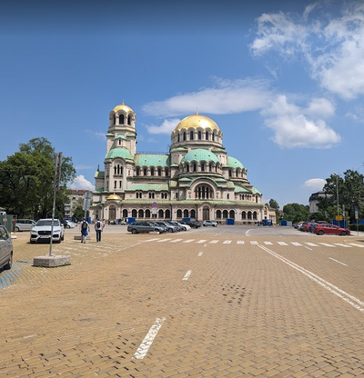

To start I’d like to talk about when I first arrived in Bulgaria. The first couple of months I struggled with some depression. It was cold, I felt isolated and I didn’t feel like I could go and do anything because I didn’t speak the language. I spent most of my time doing online school because I wanted to finish school early. After the first couple of months we went to this city called Plovidv. We were there during the беликденцки базар капана which is a seasonal festival market that happens in Plovdiv once a year. There were a bunch of vendors, churches to visit, and sights to see. I began to warm up to Bulgaria after seeing all the wonderful things it has to offer.
Downtown Bulgaria is a beautiful sight, especially the Nevesky Cathedral. It is a big cathedral with green and gold domes on top. If you’re in Sofia, you should check it out. Some churches around the area are beautiful to visit as well. There are quite a few shops you can visit and a market with fresh fruit and vegetables. I started working over the summer in Bulgaria. That’s when I truly saw Bulgarians for who they are. I worked with many locals, and all of them were so kind and friendly. When I first started working, I was nervous because they all looked kind of angry, which is what most people see when they first meet Bulgarians. But I had some wonderful conversations with them and they taught me a lot about their culture and traditions. I went to some traditional restaurants and their main food items consist of meat, tomatoes, and shopska salad. My favorite restaurant that I went to is called ресторант воденицата (the mill restaurant) it served a traditional dish called Chicken in Watermill style that had chicken fillet, rice, corn, mashed potatoes, and a cream sauce. I didn't like Bulgarian food until I had that meal. At that restaurant they do traditional performances and dances on certain days. I would recommend going when they have those performances it’s pretty amazing.
Pernik is a city about 30 minutes away from Sofia. We went to this traditional festival called Surva every year with dancers and a lot of food vendors. There were traditional dances for a couple of hours with beautiful costumes. The performances were absolutely beautiful and the food was amazing We also went to this city called Burgas which is on the Black sea coast. We stopped at this castle called Ravadinovo Castle. The gardens are beautiful and you can go through the castle. There are a bunch of staues and monuments you can take pictures with. Then we went down to Lake Atanasovsko which is a pink lake. I suggest you visit Burgas and go see these places if you have the opportunity.
A couple of other places I would like to suggest is the Rila Monastery it’s absolutely beautiful and don’t forget to get some mekitsa on your way out. The other place is the God’s Eye cave it is a beautiful cave with two holes at the top that at the right angle make it look like eyes. If you’re a big rock climber then the God’s Eye cave is a great destination for you. I am not a rock climber but I loved going through the cave. Speaking of caves another cave you should visit in Bulgaria is the Saeva Dupka cave it has a lot of stalactites, stalagmites, and stalactones. It is a beautiful cave but watch out the stairs are pretty steep.